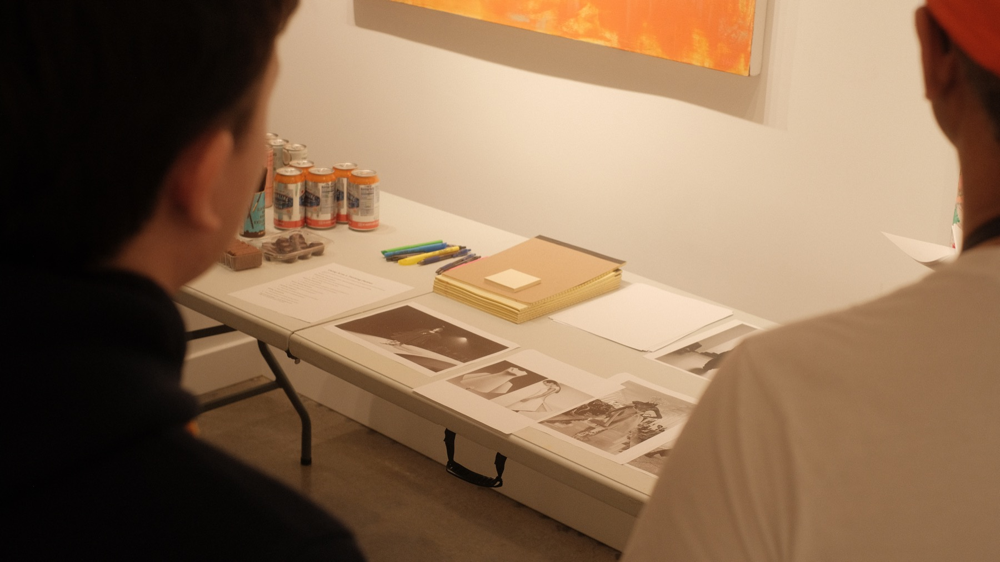

Gathering 03
AIC #3 — Designing an Outfit with AI
Shift: hands-on, structured, judgment in practice
A hands-on experiment using fashion design to explore taste, decision-making, and AI as a thinking partner.
